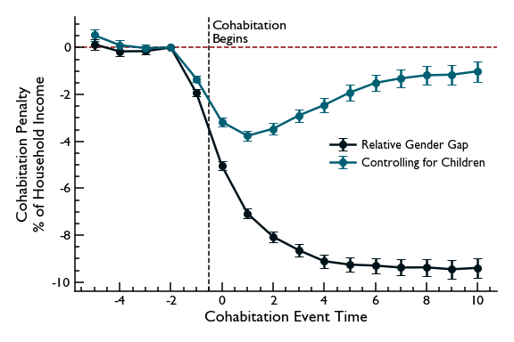
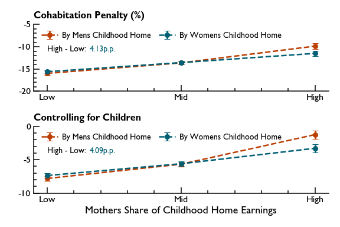

This study shows that entering into a cohabiting partnership leads to long-lasting earnings losses for women, even after accounting for the impact of child penalties. While half of the effect is due to partnered women having higher fertility than unpartnered women, an income penalty of 7% is not due to children. I investigate household specialization and gender norms as potential mechanisms, and find that while specialization is unable to account for the effect, intergenerational transmission of traditional gender norms predicts the magnitude of the penalty. My analysis relies on a unique identification of cohabiting but otherwise informal partnerships in Danish administrative data.
Gender inequality is a big topic in economics. Historically, large income differences between the genders has been associated with how households divided work between the man and the woman, with women commonly not working at all outside of the household. Many of the historical causes of gender inequality has been removed or reduced since then, but women still earn significantly less than men. A large part of that is because of children (Kleven, Landais and Søgaard, 2019), which impose a significant "child penalty" on their mothers. This research project seeks to investigate if (and how much) gender inequality precedes children, by being associated directly with the formation of cohabiting partnerships.
Such partnerships are of course very common across the world, so even modest amounts of gender inequality coming from them can have substantial impacts in the big picture. Additionally, newly cohabiting couples are a natural place to study the fundamental effects of "living in families", as opposed to as singles, because the transition from one to the other allows one to very clearly see how family life affects men and womens outcomes in the labor market.
Figure 1
The Cohabitation Penalty

Figure 1 plots the evolution of earnings from five years before the beginning of individuals first partnership until ten years after (the econometric details are in the paper). These estimates are calculated separately for men and women, and are shown in two versions. The fully drawn lines show how earnings evolve. Before moving in together men and women are on shared paths, increasing their earnings every year. However when they move in together, womens earnings stagnate and fall behind that of mens. Of course, knowing that children cause large drops in womens earnings, one might suspect that what is really happening here, is that fertility is higher after the men and women have moved in together. To account for this, the dashed lines control for children, and the pattern is still the same. This is the cohabitation penalty - the direct cost of cohabitation unrelated to children.
The y-axis in figure 1 shows the effect size in Danish Kroner, which is simple, but might make it difficult to get a sense of the magnitude of the cohabitation penalty for non-danes. To help with this, figure 2 plots the evolution of the cohabitation penalty in percent of households total income. Specifically it plots the evolution of the fraction $(y^f - y^m)/(y^f + y^m)$, after accounting for fixed effects and breakups. It shows that after accounting for children, the cohabitation penalty lands at around four percent of the households total income, and then declines in relative terms as the households income grows.
Figure 2
The Cohabitation Penalty in Percent of Household Income

The paper delves into exploring why the cohabitation penalty exists. Broadly speaking there might be two reasons. First, it is possible that once people move in together, they want to divide the tasks between them because that is the efficient thing to do. If, in addition to this simple economic incentive, women are better at household work than men (perhaps because of their upbringing), it might make sense for couples - in a purely economic sense - to divide work unequally. The second reason is less firmly based in economics. It might simply be the case that gender norms dictate some amount of inequality in couples.
I find that this second explanation is most compelling. Because the Danish administrative data covers almost 40 years, I observe a large part of the main sample individuals all the way back to childhood, and can link them with their parents. I use this to calculate a "gender-norm-index" for their childhood home, based on whether their mother brought home more, less or an equal share of income as their father. I can then re-estimate the cohabitation penalties separately based on what type of household people grew up in. If gender norms play a role in the cohabitation penalty, the expected result would be that people who grew up in very gender-traditional homes have the largest cohabitation penalties, which is exactly what figure 3 shows.
Figure 3
The Cohabitation Penalty by Gender-norm Compliance in Childhood Home

In conclusion, there appears to be an independent effect on gender inequality coming from the transition into cohabiting partners. While my results are not strong enough to say for sure, it seems that this effect is related to norms about how the genders should behave once in a couple.